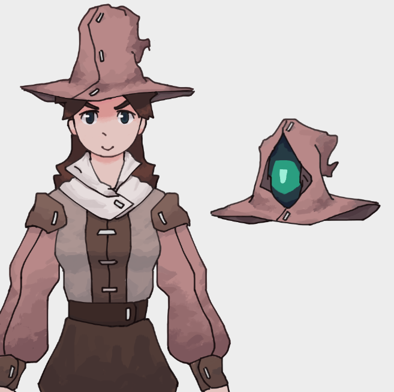

Blool
Criado sábado 16 julho 2022
O Blool foi umas das pessoas que sofreu uma mudança por causa da teleportação imperfeita de El Gato, por causa disso ele foi telerpotado com o genero oposto e por causa disso o blool vai ser referido com pronomes do genero feminino.
Ela foi teleportada perto de um castelo abandonado e achava que isso era um sonho, pegou uns trapo no castelo pra usar como roupa por enquanto, ela comecou a ouvir uns barulhos vindo das ruinas do castelo e foi investigar pra ver o que era, era uma bruxa que agora tava correndo atras dela dai elas correram por um tempo e chegou um cara numa carroagem que ja tava vindo pro castelo antes mesmo da blool ter sido teleportada la, dai esse cara da carroagem puxou uma arma e atirou na bruxa até ela morrer dai quando morreu saiu um espirito da bruxa que veio possuir a blool só que como ela é de outro mundo demorou pra ele possuir por completo e deu tempo pro cara que matou a bruxa ir la e interferir com agua benta mas ja foi tarde mais e agora a blool divide força vital com o espirito e se um morrer o outro morre tambem e eles nao cosneguem ficar muito longe um do outro por muito tempo se nao comeca a passar mal e pode levar a morte.
O cara falou que ele fazia parte de uma guilda de caçadores de bruxa e que ele iria levar a blool pra ficar la até eles econtrarem um jeito de separar ela do espirito porque foi culpa dele que ela foi possuida e quer se redimir, ele tambem cria um chapeu customizado para ela poder guardar o espirito embaixo do chapeu porque se descobrirem que a blool esta possuida ele teme que ela pode ser presa ou até mesmo morta.
Poderes e limitações
Como todo o resto dos protagonistas ela nao consegue usar magia muito bem, ao invez de diretamente usar magia para caçar bruxas, a guilda faz uso de diferentes tipos de munições para seus integrantes, que usam essas munições em suas armas de longa distancia como estilingues, bestas, e armas de fogo rudimentares
As munições sao imbutidas com mana para quando acertar alguma coisa com força gerarem uma explosao de magia.
Ela usa um uniforme rank I dos caçadores junto com um chapeu, que foi feito especificamente para ela e para conter o espirito

Trivia e outras informações
- O espirito se chama Lich
Origem (Texto antigo e desnecessariamente grande)
A blool foi teleportada para cerca das 5 da manha por perto de umas ruinas de um castelo abandonado, ela estava muito confusa e seu primeiro pensamento foi que ela de alguma forma tinha caido no sono no meio da call com seus amigos e aquilo era um sonho, ela foi até o castelo e econtrou alguns trapos antigos e usou de roupa para o momento (todos os personagens foram teleportados pelados). Após andar pelo lugar por um tempo ela começou a ouvir alguns barulhos estranhos, como achava que era um sonho e também por ser estupida demais pra ter medo da morte ela decidiu ir explorar mais afundo, ela descobriu que uma bruxa tinha decidido morar e fazer peripecias por ali, mesmo ainda pensando que isso era um sonho ela se cagou de medo e decidiu sair dali antes que a bruxa a percebesse.
Ela tentou sair do castelo sem ser percebida, mas ja era tarde demais, a bruxa ja estava atras dela. Ela comecou a correr desesperadamente da bruxa chegando a se machucar e se arranhar pela ruina do castelo o que a levou a perceber que isso talvez nao seja um sonho porque se fosse ela ja teria acordado depois de tanta adrenalina. Ela continuou correndo, com a bruxa se aproximando mais e mais a cada passo dado. Blool percebe alguma coisa se aproximando deles, antes mesmo de perceber muito bem o que era, ela ouve um som estrondoso que ecoa daquilo, é uma carroagem, que acabou de atirar na sua direção. Ela olha para tras e percebe que o tiro tinha acertado em cheio a bruxa que foi pega desprevinida, mas isso nao foi o suficiente para par a bruxa, ela de alguma forma continuou a correr, e ainda mais rapido dessa vez, a bruxa se recusa a perder uma presa se quer.
A carroagem se aproxima mais e mais da bruxa que ainda esta perseguindo blool, e eventualmente a alcança, de dentro da carroagem sai um cara segurando o que parece ser uma especie de arma bem rudimentar e ele acaba conseguindo matar a bruxa, mas após fazer isso o corpo da bruxa começa a se contorcer até de dentro dela sair um espirito maligno que estava possuindo e dando poderes a ela, o corpo da bruxa havia secado e o espirito nao poderia mais usa-lo, seu proximo alvo era blool, ela estava exausta ambos fisicamente e mentalmente e seria uma ótima candidata para um novo corpo. O espirito avança na sua direção quase imediatamente depois de sair do corpo da bruxa, com todas as poucas forças que ainda o restava ele consegue comecar o processo de posseção, mas o cara que antes tinha matado a bruxa conseguiu intervir com uma especie de agua benta, isso foi possivel pois o processo de posseção estranhamente demorou mais do que o comum no corpo de blool por conta dela ser de outro mundo, embora o processo nao ter conseguido fundir o corpo dos dois, ele conseguiu fundir parte da força vital de blool com o a do espirito e por causa disso, se um deles morrese, o outro morreria tambem.
Após todo esse alvoroço, blool desmaiou, e acordou mais tarde dentro da carroagem do cara que tinha matado a bruxa, ele se chamava <inserir nome que eu ainda tenho que pensar aqui>, e fazia parte da Guilda de Caçadores de Bruxa e era para la que eles estavam voltando, ele disse que o fato de blool ser possuida foi por culpa dele, e que blool poderia passar quando tempo for necessario morando na guilda enquanto ele tenta descobrir um jeito de separar a vida de blool e do espirito e que o fato dela ser possuida era pra ser mantido em total segredo, porque se os administradores da guilda descobrirem o que aconteceu, ela receberia pena de morte.
Backlinks: Lore do mundo:Lugares:Guilda dos Caçadores de Bruxa